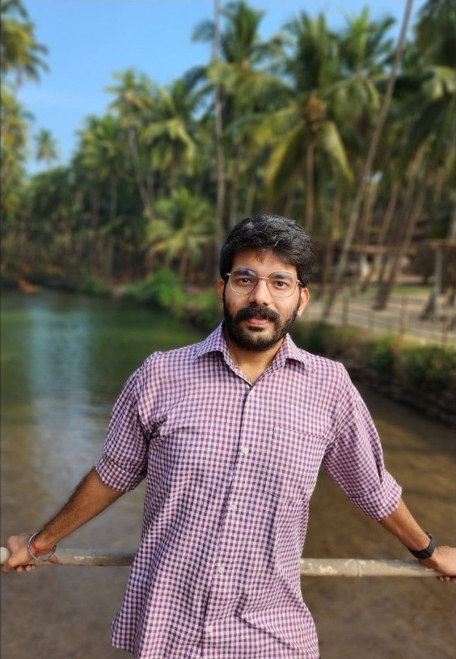
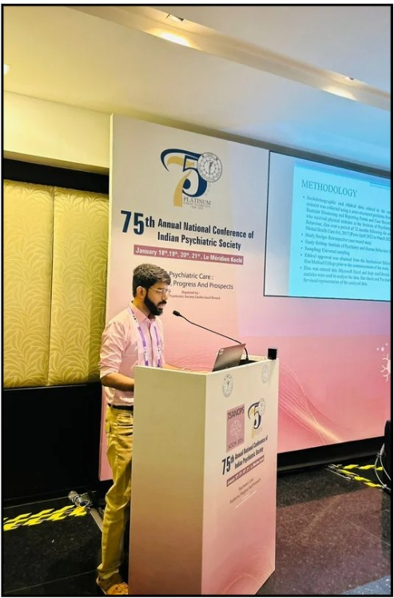

Dr Sanat Atul Lotlikar Psychiatrist in Margao, Goa
Consultant Psychiatrist (MBBS, MD)
Compassionate and confidential psychiatric care in Goa, focused on clarity, balance, and emotional well-being.


Psychiatric consultation in Margao and across Goa
Dr Sanat Atul Lotlikar is a Consultant Psychiatrist (MBBS, MD) based in Margao, South Goa. At our clinic, we offer a safe and confidential space where we talk about the concerns that matter most to you.
We focus on understanding you as a person and providing personalized treatment that supports your emotional well-being.
Anxiety, depression, sleep disorders and other mental health concerns.
Choose how you meet
-
Online consultation
Care from the comfort of your home.
-
Home visits
Personalized attention at home, within Goa.
-
In-person consultation
Focused treatment in our OPD.
OPD timings
Dr Lotlikar sees patients at three hospitals during the week. Call before you visit to confirm your slot.
6pm–7pm
5pm–6pm
6pm–7pm
5pm–6pm
6pm–7pm
5pm–6pm
Victor Hospital
Malbhat, Old Station Road,near Carmelite Monastery,
Margao, Goa 403601
Tuesday, Thursday and Saturday, 5pm–6pm
Get directions